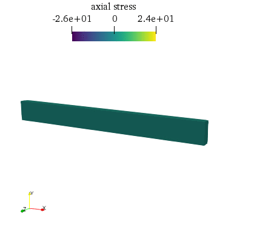
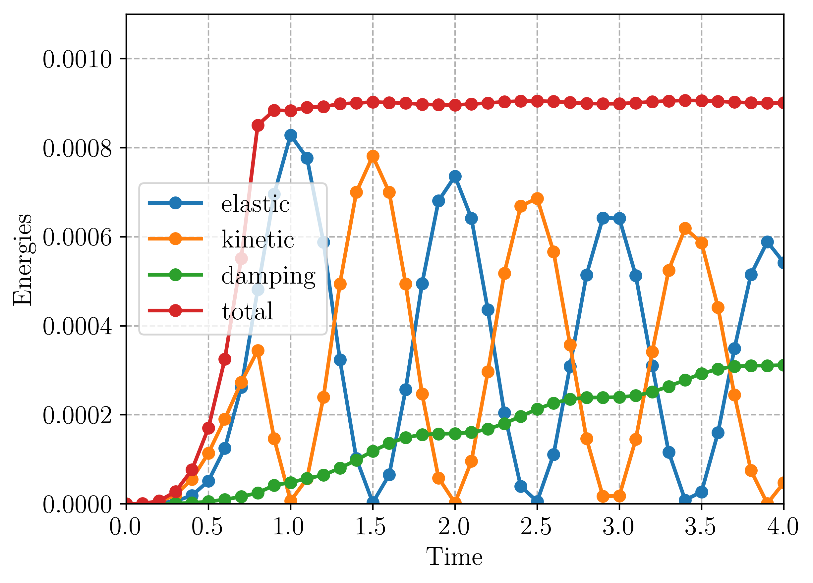

Time-integration of elastodynamics equation¶
This demo is implemented in a single Python file,
demo_elastodynamics.py, which contains both the
variational forms and the solver.
This demo shows how to perform time integration of transient elastodynamics using the generalized-\(\alpha\) method [ERL2002]. In particular it demonstrates how to:
formulate mass and damping forms of the elastodynamics equation
implement the generalized-\(\alpha\) method and its influence on the solution
perform efficient computation of stresses using
LocalSolver
The deformed structure evolution over time along with the axial stress will look as follows:
{kind=link}
Introduction and elastodynamics equation¶
The elastodynamics equation combine the balance of linear momentum:
where \(u\) is the displacement vector field, \(\ddot{u}=\partial^2 u/\partial t^2\) is the acceleration, \(\rho\) the material density, \(b\) a given body force and \(\sigma\) the stress tensor which is related to the displacement through a constitutive equation. In the case of isotropic linearized elasticity, one has:
where \(\varepsilon = (\nabla u + (\nabla u)^T)/2\) is the linearized strain tensor, \(\mathbb{1}\) is the identity of second-rank tensors and \(\lambda=\dfrac{E\nu}{(1+\nu)(1-2\nu)},\mu=\dfrac{E}{2(1+\nu)}\) are the Lame coefficients given as functions of the Young modulus \(E\) and the Poisson ratio \(\nu\).
The weak form is readily obtained by integrating by part the balance equation using a test function \(v\in V\) with \(V\) being a suitable function space that satisfies the displacement boundary conditions:
The previous equation can be written as follows:
where \(m\) is the symmetric bilinear form associated with the mass matrix and \(k\) the one associated with the stiffness matrix.
After introducing the finite element space interpolation, one obtains the corresponding discretized evolution equation:
which is a generalized \(n\)-dof harmonic oscillator equation.
Quite often in structural dynamics, structures do not oscillate perfectly but lose energy through various dissipative mechanisms (friction with air or supports, internal dissipation through plasticity, damage, etc.). Dissipative terms can be introduced at the level of the constitutive equation if these mechanisms are well known but quite often it is not the case. Dissipation can then be modeled by adding an ad hoc damping term depending on the structure velocity \(\dot{u}\) to the previous evolution equation:
The damping form will be considered here as bilinear and symmetric, being therefore associated with a damping matrix \([C]\).
Rayleigh damping¶
When little is known about the origin of damping in the structure, a popular choice for the damping matrix, known as Rayleigh damping, consists in using a linear combination of the mass and stiffness matrix \([C] = \eta_M[M]+\eta_K[K]\) with two positive parameters \(\eta_M,\eta_K\) which can be fitted against experimental measures for instance (usually by measuring the damping ratio of two natural modes of vibration).
Time discretization using the generalized-\(\alpha\) method¶
We now introduce a time discretization of the interval study \([0;T]\) in \(N+1\) time increments \(t_0=0,t_1,\ldots,t_N,t_{N+1}=T\) with \(\Delta t=T/N\) denoting the time step (supposed constant). The resolution will make use of the generalized-\(\alpha\) method which can be seen as an extension of the widely used Newmark-\(\beta\) method in structural dynamics. As an implicit method, it is unconditionally stable for a proper choice of coefficients so that quite large time steps can be used. It also allows for high frequency dissipation and offers a second-order accuracy, i.e. in \(O(\Delta t^2)\).
The method consists in solving the dynamic evolution equation at intermediate time between \(t_n\) and \(t_{n+1}\) as follows:
with the notation \(X_{n+1-\alpha} = (1-\alpha)X_{n+1}+\alpha X_{n}\). In addition, the following approximation for the displacement and velocity at \(t_{n+1}\) are used:
It can be seen that these are the relations of the Newmark method. The latter is therefore obtained as a particular case when \(\alpha_f=\alpha_m=0\).
The problem can then be formulated in terms of unkown displacement at \(t_{n+1}\) with:
After plugging into the evolution and rearranging the known and unknown terms, one obtains the following system to solve:
- where:
\([\bar{K}] = [K]+c_1[C]+m_1[M]\)
\(c_1 = \dfrac{\gamma(1-\alpha_f)}{\beta\Delta t}\)
\(c_2 = 1-\gamma(1-\alpha_f)/\beta\)
\(c_3 = \Delta t(1-\alpha_f)(1-\dfrac{\gamma}{2\beta})\)
\(m_1 = \dfrac{(1-\alpha_m)}{\beta\Delta t^2}\)
\(m_2 = \dfrac{(1-\alpha_m)}{\beta\Delta t}\)
\(m_3 = 1-\dfrac{1-\alpha_m}{2\beta}\)
Once the linear system has been solved for \(\{u_{n+1}\}\), the new velocity and acceleration are computed using the previous formulae.
Popular choice of parameters¶
The most popular choice for the parameters is: \(\alpha_m,\alpha_f \leq 1/2\) and \(\gamma=\dfrac{1}{2}+\alpha_m-\alpha_f\), \(\beta=\dfrac{1}{4}\left(\gamma+\dfrac{1}{2}\right)^2\) which ensures unconditional stability, optimal dissipation and second-order accuracy.
Implementation¶
We consider a rectangular beam clamped at one end and loaded by a uniform vertical traction at the other end. After importing the relevant modules, the mesh and subdomains for boundary conditions are defined:
from dolfin import *
import numpy as np
import matplotlib.pyplot as plt
# Form compiler options
parameters["form_compiler"]["cpp_optimize"] = True
parameters["form_compiler"]["optimize"] = True
# Define mesh
mesh = BoxMesh(Point(0., 0., 0.), Point(1., 0.1, 0.04), 60, 10, 5)
# Sub domain for clamp at left end
def left(x, on_boundary):
return near(x[0], 0.) and on_boundary
# Sub domain for rotation at right end
def right(x, on_boundary):
return near(x[0], 1.) and on_boundary
Material parameters for the elastic constitutive relation, the material density \(\rho\) for the mass matrix and the two parameters defining the Rayleigh damping \(\eta_M,\eta_K\) (initially zero damping is considered but this value can be changed) are now defined:
# Elastic parameters
E = 1000.0
nu = 0.3
mu = Constant(E / (2.0*(1.0 + nu)))
lmbda = Constant(E*nu / ((1.0 + nu)*(1.0 - 2.0*nu)))
# Mass density
rho = Constant(1.0)
# Rayleigh damping coefficients
eta_m = Constant(0.)
eta_k = Constant(0.)
Parameters used for the time discretization scheme are now defined. First, the four parameters used by the generalized-\(\alpha\) method are chosen. Here, we used the optimal dissipation and second-order accuracy choice for \(\beta\) and \(\gamma\), namely \(\beta=\dfrac{1}{4}\left(\gamma+\dfrac{1}{2}\right)^2\) and \(\gamma=\dfrac{1}{2}+\alpha_m-\alpha_f\) with \(\alpha_m=0.2\) and \(\alpha_f=0.4\) ensuring unconditional stability:
# Generalized-alpha method parameters
alpha_m = Constant(0.2)
alpha_f = Constant(0.4)
gamma = Constant(0.5+alpha_f-alpha_m)
beta = Constant((gamma+0.5)**2/4.)
We also define the final time of the interval, the number of time steps and compute the associated time interval between two steps:
# Time-stepping parameters
T = 4.0
Nsteps = 50
dt = Constant(T/Nsteps)
We now define the time-dependent loading. Body forces are zero and the imposed loading consists of a uniform vertical traction
applied at the right extremity. The loading amplitude will vary linearly from \(0\) to \(p_0=1\) over the time interval
\([0;T_c=T/5]\), after \(T_c\) the loading is removed. For this purpose, we used the following JIT-compiled Expression.
In particular, it uses a conditional syntax using operators ? and :
p0 = 1.
cutoff_Tc = T/5
# Define the loading as an expression depending on t
p = Expression(("0", "t <= tc ? p0*t/tc : 0", "0"), t=0, tc=cutoff_Tc, p0=p0, degree=0)
A standard vectorial \(P^1\) FunctionSpace is now defined for the displacement, velocity and acceleration fields. We also define a tensorial DG-0 FunctionSpace for saving the stress field evolution:
# Define function space for displacement, velocity and acceleration
V = VectorFunctionSpace(mesh, "CG", 1)
# Define function space for stresses
Vsig = TensorFunctionSpace(mesh, "DG", 0)
Test and trial functions are defined and the unkown displacement (corresponding to \(\{u_{n+1}\}\) for the current time step)
will be represented by the Function u. Displacement, velocity and acceleration fields of the previous increment
\(t_n\) will respectively be represented by functions u_old, v_old and a_old:
# Test and trial functions
du = TrialFunction(V)
u_ = TestFunction(V)
# Current (unknown) displacement
u = Function(V, name="Displacement")
# Fields from previous time step (displacement, velocity, acceleration)
u_old = Function(V)
v_old = Function(V)
a_old = Function(V)
We now use a MeshFunction for distinguishing the different boundaries and mark the right extremity using an AutoSubDomain.
The exterior surface measure ds is then defined using the boundary subdomains. Simple Dirichlet boundary conditions are also defined at the left extremity:
# Create mesh function over the cell facets
boundary_subdomains = MeshFunction("size_t", mesh, mesh.topology().dim() - 1)
boundary_subdomains.set_all(0)
force_boundary = AutoSubDomain(right)
force_boundary.mark(boundary_subdomains, 3)
# Define measure for boundary condition integral
dss = ds(subdomain_data=boundary_subdomains)
# Set up boundary condition at left end
zero = Constant((0.0, 0.0, 0.0))
bc = DirichletBC(V, zero, left)
Python functions are now defined to obtain the elastic stress tensor \(\sigma\) (linear isotropic elasticity), the bilinear mass and stiffness forms as well as the damping form obtained as a linear combination of the mass and stiffness forms (Rayleigh damping). The linear form corresponding to the work of external forces is also defined:
# Stress tensor
def sigma(r):
return 2.0*mu*sym(grad(r)) + lmbda*tr(sym(grad(r)))*Identity(len(r))
# Mass form
def m(u, u_):
return rho*inner(u, u_)*dx
# Elastic stiffness form
def k(u, u_):
return inner(sigma(u), sym(grad(u_)))*dx
# Rayleigh damping form
def c(u, u_):
return eta_m*m(u, u_) + eta_k*k(u, u_)
# Work of external forces
def Wext(u_):
return dot(u_, p)*dss(3)
Functions for implementing the time stepping scheme are also defined. update_a returns \(\{\ddot{u}_{n+1}\}\)
as a function of the variables at the previous increment and of the new displacement \(\{u_{n+1}\}\). The function accepts a keyword ufl so that the expressions involved can be used with UFL representations if True or with array of values if False (we will make use of both possibilities later).
In particular, the time step dt and time-stepping scheme parameters are either Constant or floats depending on the case.
Function update_v does the same but for the new velocity \(\{\dot{u}_{n+1}\}\) as a function of the previous variables
and of the new acceleration. Finally, function update_fields performs the final update at the end of the time step when the new
displacement \(\{u_{n+1}\}\) has effectively been computed. In this context, the new acceleration and velocities are computed
using the vector representation of the different fields. The variables keeping track of the values at the previous increment are now assigned the new values computed for the current increment:
# Update formula for acceleration
# a = 1/(2*beta)*((u - u0 - v0*dt)/(0.5*dt*dt) - (1-2*beta)*a0)
def update_a(u, u_old, v_old, a_old, ufl=True):
if ufl:
dt_ = dt
beta_ = beta
else:
dt_ = float(dt)
beta_ = float(beta)
return (u-u_old-dt_*v_old)/beta_/dt_**2 - (1-2*beta_)/2/beta_*a_old
# Update formula for velocity
# v = dt * ((1-gamma)*a0 + gamma*a) + v0
def update_v(a, u_old, v_old, a_old, ufl=True):
if ufl:
dt_ = dt
gamma_ = gamma
else:
dt_ = float(dt)
gamma_ = float(gamma)
return v_old + dt_*((1-gamma_)*a_old + gamma_*a)
def update_fields(u, u_old, v_old, a_old):
"""Update fields at the end of each time step."""
# Get vectors (references)
u_vec, u0_vec = u.vector(), u_old.vector()
v0_vec, a0_vec = v_old.vector(), a_old.vector()
# use update functions using vector arguments
a_vec = update_a(u_vec, u0_vec, v0_vec, a0_vec, ufl=False)
v_vec = update_v(a_vec, u0_vec, v0_vec, a0_vec, ufl=False)
# Update (u_old <- u)
v_old.vector()[:], a_old.vector()[:] = v_vec, a_vec
u_old.vector()[:] = u.vector()
The system variational form is now built by expressing the new acceleration \(\{\ddot{u}_{n+1}\}\) as a function of
the TrialFunction du using update_a, which here works as a UFL expression. Using this new acceleration, the same is
done for the new velocity using update_v. Intermediate averages using parameters \(\alpha_m,\alpha_f\) of the generalized- \(\alpha\)
method are obtained with a user-defined fuction avg. The weak form evolution equation is then written using all these
quantities. Since the problem is linear, we then extract the bilinear and linear parts using rhs and lhs:
def avg(x_old, x_new, alpha):
return alpha*x_old + (1-alpha)*x_new
# Residual
a_new = update_a(du, u_old, v_old, a_old, ufl=True)
v_new = update_v(a_new, u_old, v_old, a_old, ufl=True)
res = m(avg(a_old, a_new, alpha_m), u_) + c(avg(v_old, v_new, alpha_f), u_) \
+ k(avg(u_old, du, alpha_f), u_) - Wext(u_)
a_form = lhs(res)
L_form = rhs(res)
Alternatively, the use of derivative can be made for non-linear problems for instance or one can also directly
formulate the system to solve, involving the modified stiffness matrix \([\bar{K}]\) and the various coefficients introduced earlier.
Since the system matrix to solve is the same for each time step (constant time step), it is not necessary to factorize the system at each increment.
It can be done once and for all and only perform assembly of the varying right-hand side and backsubstitution to obtain the solution
much more efficiently. This is done by defining a LUSolver object while PETSc handles caching factorizations:
# Define solver for reusing factorization
K, res = assemble_system(a_form, L_form, bc)
solver = LUSolver(K, "mumps")
solver.parameters["symmetric"] = True
We now initiate the time stepping loop. We will keep track of the beam vertical tip displacement over time as well as the different
parts of the system total energy. We will also compute the stress field and save it, along with the displacement field, in a XDMFFile.
The option flush_ouput enables to open the result file before the loop is finished, the function_share_mesh option tells that only one
mesh is used for all functions of a given time step (displacement and stress) while the rewrite_function_mesh enforces that the same mesh
is used for all time steps. These two options enables writing the mesh information only once instead of \(2N_{steps}\) times:
# Time-stepping
time = np.linspace(0, T, Nsteps+1)
u_tip = np.zeros((Nsteps+1,))
energies = np.zeros((Nsteps+1, 4))
E_damp = 0
E_ext = 0
sig = Function(Vsig, name="sigma")
xdmf_file = XDMFFile("elastodynamics-results.xdmf")
xdmf_file.parameters["flush_output"] = True
xdmf_file.parameters["functions_share_mesh"] = True
xdmf_file.parameters["rewrite_function_mesh"] = False
The time loop is now started, the loading is first evaluated at \(t=t_{n+1-\alpha_f}\). The corresponding system right-hand side is then assembled and the system is solved. The different fields are then updated with the newly computed quantities. Finally, some post-processing is performed: stresses are computed and written to the result file and the tip displacement and the different energies are recorded:
def local_project(v, V, u=None):
"""Element-wise projection using LocalSolver"""
dv = TrialFunction(V)
v_ = TestFunction(V)
a_proj = inner(dv, v_)*dx
b_proj = inner(v, v_)*dx
solver = LocalSolver(a_proj, b_proj)
solver.factorize()
if u is None:
u = Function(V)
solver.solve_local_rhs(u)
return u
else:
solver.solve_local_rhs(u)
return
for (i, dt) in enumerate(np.diff(time)):
t = time[i+1]
print("Time: ", t)
# Forces are evaluated at t_{n+1-alpha_f}=t_{n+1}-alpha_f*dt
p.t = t-float(alpha_f*dt)
# Solve for new displacement
res = assemble(L_form)
bc.apply(res)
solver.solve(K, u.vector(), res)
# Update old fields with new quantities
update_fields(u, u_old, v_old, a_old)
# Save solution to XDMF format
xdmf_file.write(u, t)
# Compute stresses and save to file
local_project(sigma(u), Vsig, sig)
xdmf_file.write(sig, t)
p.t = t
# Record tip displacement and compute energies
# Note: Only works in serial
if MPI.comm_world.size == 1:
u_tip[i+1] = u(1., 0.05, 0.)[1]
E_elas = assemble(0.5*k(u_old, u_old))
E_kin = assemble(0.5*m(v_old, v_old))
E_damp += dt*assemble(c(v_old, v_old))
# E_ext += assemble(Wext(u-u_old))
E_tot = E_elas+E_kin+E_damp #-E_ext
energies[i+1, :] = np.array([E_elas, E_kin, E_damp, E_tot])
Note that in the above, the stresses are computed using a LocalSolver through the local_project function. Since the stress function space
is a DG-0 space, the projection on this space can be performed element-wise in a very efficient manner. We therefore take advantage of the LocalSolver
functionality which is precisely dedicated to such situations. Since this projection is performed at each time step, the savings in terms of computing
time can be quite important.
As regards the computation of the various energies, the elastic and kinetic energies are respectively given by:
which are readily computed from the respective stiffness and mass forms k and m and the current displacement and velocity. The energy related to damping
is computed from the corresponding dissipation term \(\mathcal{D}=c(\dot{u},\dot{u})\) and integrated over time:
As for the work developed by the external forces, the contribution to the energy is added at each time step. Finally, the total energy of the sytem is given by:
When the time evolution loop is finished, the evolution of the tip displacement as well as the different contributions of the energy are plotted as functions of time:
if MPI.comm_world.size == 1:
# Plot tip displacement evolution
plt.figure()
plt.plot(time, u_tip)
plt.xlabel("Time")
plt.ylabel("Tip displacement")
plt.ylim(-0.5, 0.5)
plt.show()
if (MPI.comm_world.rank == 0):
# Plot energies evolution
plt.figure()
plt.plot(time, energies)
plt.legend(("elastic", "kinetic", "damping", "total"))
plt.xlabel("Time")
plt.ylabel("Energies")
plt.ylim(0, 0.0011)
plt.show()
Analyzing the results¶
We first consider the case of zero Rayleigh damping \(\eta_M=\eta_K=0\). In this case, it can be observed that the evolution of the total energy depends on the choice of the time-stepping scheme parameters. With \(\alpha_m=\alpha_f=0\), we recover the Newmark-\(\beta\) method with \(\beta=0.25,\gamma=0.5\). This scheme is known for being conservative. This can be observed (figure-left) in the constant total energy for \(t\geq T_c\) when the loading is removed. On the contrary, for non zero alpha parameters, e.g. \(\alpha_m=0.2, \alpha_f=0.4\), it can be observed (figure-right) that the energy is decreasing during this phase, indicating numerical damping. For both cases, the scheme is unconditionally stable. Moreover, these differences vanish when reducing the time step.
{kind=link}
{kind=link}
For non-zero Rayleigh damping \(\eta_M=\eta_K=0.01\), the total energy including viscous dissipation tends to oscillate around a constant value, with oscillations vanishing for decreasing time steps.
{kind=link}